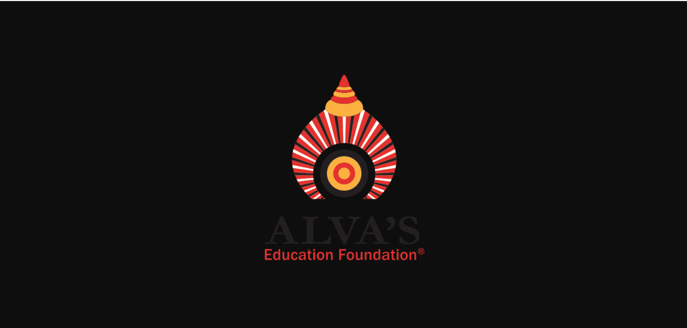

ALVA'S INSTITUTE OF ENGINEERING & TECHNOLOGY
A Unit of Alva's Education Foundation(R), Moodubidire
(Affilliated to VTU, Belgaum, Approved by AICTE, New Delhi, Recognized by Govt. of Karnataka)
Vision
“Engendering competent, excellent professionals by transforming the knowledge and computing skills to individuals through modern innovative tools and techniques”.
Mission
- To produce skilled, creative software developers through rigorous training.
- To conduct specific technical courses to keep abreast to the latest technological developments and transformations in the domain.
- To establish Industry-Institute Interaction programs to enhance the skills of employability and entrepreneurship.
- To implement the ideas of research and innovations in interdisciplinary domains.
PROGRAMME EDUCATIONAL OBJECTIVEs (PEOs)
- PEO1: Exhibit fundamental strengths of core courses of Computer Engineering to solve the problems of computing world.
- PEO2: Adapt and contribute the emerging technological changes.
- PEO3: Get employed in computing profession or engaged in learning to pursue higher studies.
PROGRAMME SPECIFIC OUTCOMEs (PSOs)